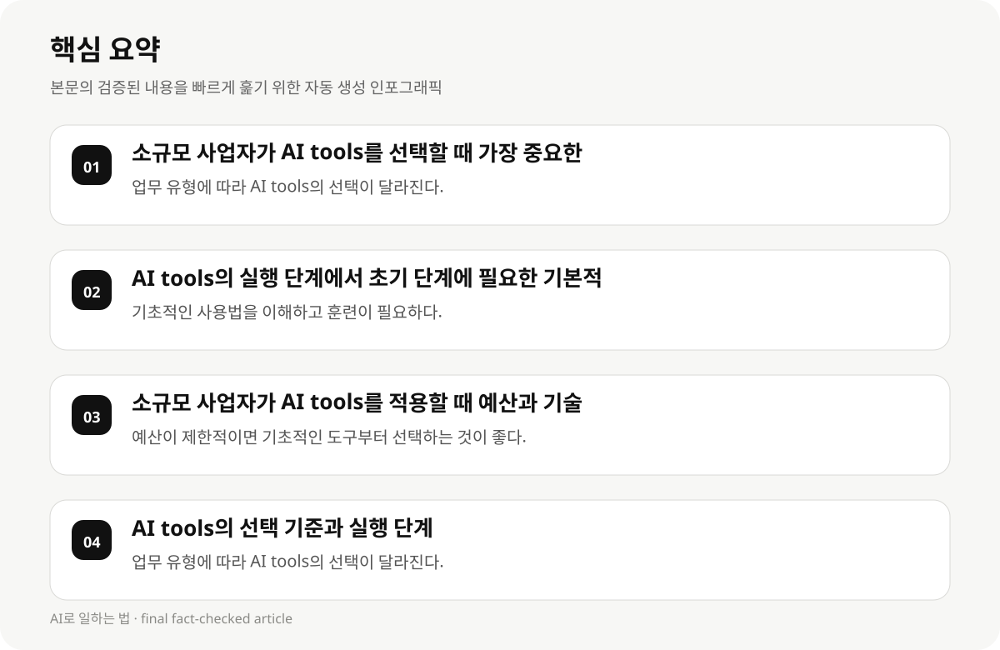

소규모 사업자가 AI tools를 선택할 때 가장 중요한 요소 #
소규모 사업자가 AI tools를 선택할 때 가장 중요한 요소는 업무 유형, 예산, 기술 지식입니다. 예를 들어, 데이터 분석에 필요한 AI tools는 복잡한 기술 지식이 필요하지만, 콘텐츠 생성에 필요한 AI tools는 기초적인 사용법이 필요합니다. 예산이 제한적이면 기초적인 도구부터 선택하는 것이 좋습니다.
AI tools의 선택은 업무 유형에 따라 달라집니다. 예를 들어, 소규모 브랜드는 콘텐츠 생성에 적합한 AI 도구를 선택할 수 있지만, 데이터 분석에 필요한 도구는 더 복잡한 기술 지식이 필요합니다. 기초적인 기술 지식이 부족한 소규모 사업자에게는 AI tools의 선택 시 기초적인 훈련이 필수적입니다.
- 업무 유형에 따라 AI tools의 선택이 달라진다.
- 예산이 제한적이면 기초적인 도구부터 선택하는 것이 좋다.
- 기본적인 기술 지식이 부족한 소규모 사업자에게는 AI tools의 선택 시 기초적인 훈련이 필수적이다.
AI tools의 실행 단계에서 초기 단계에 필요한 기본적인 지식 #
AI tools의 실행 단계에서 초기 단계에 필요한 기본적인 지식은 기초적인 사용법, 훈련, 그리고 단계별 학습이 필요합니다. 예를 들어, AI tools의 사용법을 이해하고, 실제 업무에 적용할 수 있는 데 도움이 됩니다.
소규모 사업자가 AI tools를 적용할 때 예산과 기술 지식의 균형 유지 방법은 다음과 같습니다. 예를 들어, 예산이 제한적이면 기초적인 도구부터 선택하고, 기술 지식이 부족할 경우 단계별 교육을 통해 사용법을 습득하는 것이 좋습니다. AI tools의 실행 단계에서 초기 단계에 필요한 기본적인 지식은 기초적인 사용법, 훈련, 그리고 단계별 학습이 필요합니다.
AI tools의 실행 단계는 단계별로 구분되어 있으며, 초기 단계에서는 기초적인 사용과 훈련이 필요합니다. 예를 들어, AI tools의 사용법을 이해하고, 실제 업무에 적용할 수 있는 데 도움이 됩니다. 기초적인 기술 지식이 부족한 소규모 사업자에게는 AI tools의 선택 시 기초적인 훈련이 필수적입니다.
- 기초적인 사용법을 이해하고 훈련이 필요하다.
- 단계별 학습이 필수적이다.
- AI tools의 사용법을 이해하고 실제 업무에 적용할 수 있는 데 도움이 됩니다.
소규모 사업자가 AI tools를 적용할 때 예산과 기술 지식의 균형 유지 방법 #
소규모 사업자가 AI tools를 적용할 때 예산과 기술 지식의 균형 유지 방법은 다음과 같습니다. 예를 들어, 예산이 제한적이면 기초적인 도구부터 선택하고, 기술 지식이 부족한 경우 단계별 교육을 통해 기초적인 사용법을 습득하는 것이 좋습니다.
AI tools의 선택 시 예산과 기술 지식을 고려해야 하며, 예산이 부족할 경우 기초적인 도구부터 선택하고, 기술 지식이 부족할 경우 단계별 교육을 통해 사용법을 습득하는 것이 좋습니다.
소규모 사업자에게는 AI tools의 초기 적용 단계에서 기초적인 훈련이 필수적입니다. 이는 예산과 기술 지식의 균형을 유지하는 데 도움이 됩니다.
소규모 사업자가 AI tools를 적용할 때 예산과 기술 지식의 균형 유지 방법은 다음과 같습니다. 예를 들어, 예산이 제한적이면 기초적인 도구부터 선택하고, 기술 지식이 부족할 경우 단계별 교육을 통해 사용법을 습득하는 것이 좋습니다. AI tools의 선택 기준은 업무 유형, 예산, 기술 지식에 따라 달라집니다.
AI tools의 선택 기준은 업무 유형, 예산, 기술 지식에 따라 달라집니다. 예를 들어, 데이터 분석에 필요한 AI tools는 복잡한 기술 지식이 필요하지만, 콘텐츠 생성에 필요한 AI tools는 기초적인 사용법이 필요합니다. 예산이 제한적이면 기초적인 도구부터 선택하는 것이 좋습니다.
- 예산이 제한적이면 기초적인 도구부터 선택하는 것이 좋다.
- 기술 지식이 부족할 경우 단계별 교육이 필수적이다.
- AI tools의 초기 적용 단계에서 기초적인 훈련이 필수적이다.

AI tools의 선택 기준과 실행 단계 #
AI tools의 선택 기준은 업무 유형, 예산, 기술 지식에 따라 달라집니다. 예를 들어, 데이터 분석에 필요한 AI tools는 복잡한 기술 지식이 필요하지만, 콘텐츠 생성에 필요한 AI tools는 기초적인 사용법이 필요합니다.
AI tools의 실행 단계는 단계별로 구분되어 있으며, 초기 단계에서는 기초적인 사용과 훈련이 필요합니다. 예를 들어, AI tools의 사용법을 이해하고, 실제 업무에 적용할 수 있는 데 도움이 됩니다.
소규모 사업자에게는 AI tools의 선택과 실행 단계에서 업무 유형, 예산, 기술 지식을 고려해야 하며, 예산이 제한적이면 기초적인 도구부터 선택하고, 기술 지식이 부족할 경우 단계별 교육을 통해 사용법을 습득하는 것이 좋습니다.
AI tools의 실전 활용 사례는 다음과 같습니다. 예를 들어, 소규모 브랜드는 콘텐츠 생성에 적합한 AI 도구를 선택하고, 데이터 분석에 필요한 AI 도구는 예산이 허용되는 경우 선택하는 것이 좋습니다. AI tools의 실행 단계는 예산과 기술 지식의 균형을 유지하는 데 도움이 됩니다.
AI tools의 실행 단계는 예산과 기술 지식의 균형을 유지하는 데 도움이 됩니다. 예를 들어, AI tools의 사용법을 이해하고, 실제 업무에 적용할 수 있는 데 도움이 됩니다. 소규모 사업자에게는 AI tools의 실전 활용 사례를 통해 기초적인 사용법을 습득하고, 예산과 기술 지식의 균형을 유지하는 데 도움이 됩니다.
- 업무 유형에 따라 AI tools의 선택이 달라진다.
- 예산이 제한적이면 기초적인 도구부터 선택하는 것이 좋다.
- 기술 지식이 부족할 경우 단계별 교육이 필수적이다.
AI tools의 실전 활용 사례 및 단계별 실행 #
AI tools의 실전 활용 사례는 다음과 같습니다. 예를 들어, 소규모 브랜드는 콘텐츠 생성에 적합한 AI 도구를 선택하고, 데이터 분석에 필요한 AI 도구는 예산이 허용되는 경우 선택하는 것이 좋습니다.
AI tools의 실행 단계는 다음과 같습니다. 예를 들어, AI tools의 사용법을 이해하고, 실제 업무에 적용할 수 있는 데 도움이 됩니다. 이는 예산과 기술 지식의 균형을 유지하는 데 도움이 됩니다.
소규모 사업자에게는 AI tools의 실전 활용 사례를 통해 기초적인 사용법을 습득하고, 예산과 기술 지식의 균형을 유지하는 데 도움이 됩니다.
- AI tools의 실전 활용 사례를 통해 기초적인 사용법을 습득할 수 있다.
- AI tools의 실행 단계는 예산과 기술 지식의 균형을 유지하는 데 도움이 된다.
- AI tools의 실전 활용 사례를 통해 기초적인 사용법을 습득할 수 있다.
AI tools의 선택과 실행 단계에서의 단계별 교육 #
AI tools의 선택과 실행 단계에서 단계별 교육은 다음과 같습니다. 예를 들어, AI tools의 사용법을 이해하고, 실제 업무에 적용할 수 있는 데 도움이 됩니다. 이는 예산과 기술 지식의 균형을 유지하는 데 도움이 됩니다.
소규모 사업자에게는 AI tools의 선택과 실행 단계에서 단계별 교육이 필수적입니다. 이는 예산과 기술 지식의 균형을 유지하는 데 도움이 됩니다.
- AI tools의 선택과 실행 단계에서 단계별 교육이 필수적이다.
- AI tools의 사용법을 이해하고, 실제 업무에 적용할 수 있는 데 도움이 됩니다.
- 소규모 사업자에게는 예산과 기술 지식의 균형을 유지하는 데 도움이 됩니다.
AI tools의 선택과 실행 단계에서의 단계별 훈련 #
AI tools의 선택과 실행 단계에서 단계별 훈련은 다음과 같습니다. 예를 들어, AI tools의 사용법을 이해하고, 실제 업무에 적용할 수 있는 데 도움이 됩니다. 이는 예산과 기술 지식의 균형을 유지하는 데 도움이 됩니다.
소규모 사업자에게는 AI tools의 선택과 실행 단계에서 단계별 훈련이 필수적입니다. 이는 예산과 기술 지식의 균형을 유지하는 데 도움이 됩니다.
- AI tools의 선택과 실행 단계에서 단계별 훈련이 필수적이다.
- AI tools의 사용법을 이해하고, 실제 업무에 적용할 수 있는 데 도움이 됩니다.
- 소규모 사업자에게는 예산과 기술 지식의 균형을 유지하는 데 도움이 됩니다.
AI tools의 선택과 실행 단계에서의 단계별 교육 #
AI tools의 선택과 실행 단계에서 단계별 교육은 다음과 같습니다. 예를 들어, AI tools의 사용법을 이해하고, 실제 업무에 적용할 수 있는 데 도움이 됩니다. 이는 예산과 기술 지식의 균형을 유지하는 데 도움이 됩니다.
소규모 사업자에게는 AI tools의 선택과 실행 단계에서 단계별 교육이 필수적입니다. 이는 예산과 기술 지식의 균형을 유지하는 데 도움이 됩니다.
- AI tools의 선택과 실행 단계에서 단계별 교육이 필수적이다.
- AI tools의 사용법을 이해하고, 실제 업무에 적용할 수 있는 데 도움이 됩니다.
- 소규모 사업자에게는 예산과 기술 지식의 균형을 유지하는 데 도움이 됩니다.